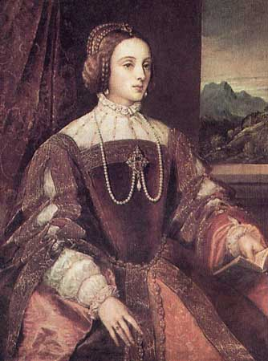
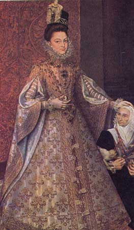
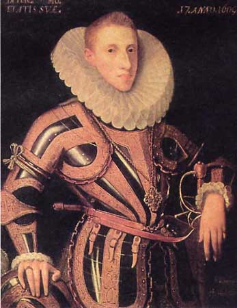
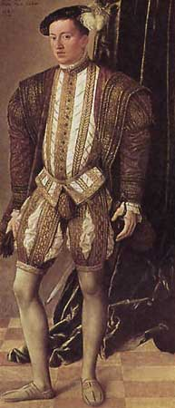

|
Корсет
Испании XVI века
|
||
|
 |
Поскольку
христианская мораль полагала тело греховным, испанские придворные женские
платья не имели ни декольте, ни распашных юбок. Поэтому строгие католички-испанки
носили под одеждой сложную конструкцию, которая
не подчёркивала, а, наоборот,
маскировала слишком заметные женские формы.
Для этого в корсеты (<=) на месте, где у женщины, по идее, должна находиться грудь, вставляли стальные, костяные или деревянные пластины, которые доставляли жертвам моды немало мучений. Корсет имел острый твердый выступ на животе, благодаря чему лиф плавно переходил на юбку - вердугос, придавая всему торсу вид треугольника (=>). В итоге девичья грудь оставалась плоской, тельце – субтильным, а личико – ангельски бледным. Именно такие хрупкие создания могли вдохновить рыцарей печального образа на подвиги и сражения с ветряными мельницами. |
 |
| Тициан. Изабелла Португальская. 1535 г. Прадо. Мадрид | Диего дель Рианьо. Портрет Исабель Клары Эухении. 1584 г. Прадо. Мадрид. | |
 |
На формирование эталона
мужского костюма оказала огромное влияние фанатическая религиозность испанских
королей и грандов. Идеальные пропорции мужской фигуры, согласно представлениям той эпохи - широкая линия плеч, выпуклая грудь. Мужской корсет появившись в предыдущие столетия не выходил из употребления и в XVI веке. Позднее корсеты-панцири стали изготовлять из ажурного железа(<=), а затем появились более гибкие корсеты (=>) с применением в конструкции китового уса. Арматура из китового уса покрывалась тканью. |
 |
| Хуан Пантоха де ла Крус. Портрет Диего де Вильямайора. 1605 г. Эрмитаж. Санкт-Петербург. | Якоб Зайсенеггер. Великий князь Фердинанд Тирольский. 1542 г. Художественный исторический музей. Вена. | |
|
Вопросы
для самопроверки
|
||
| 1.
Эстетический идеал жеской красоты, какой он? 2. Эстетический идеал мужской красоты, какой он? 3. Что представлял собой женский корсет? 4. Что представлял собой мужской корсет? |
||